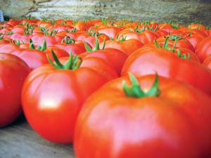

The culture, creature comforts and democratic society we enjoy today are all made possible by the fact that many centuries ago, humans found ways to produce more food than their families needed. Having surplus food, and discovering ways to store and protect it, meant that some people could turn their attention to activities beyond subsistence farming, and our “advanced” civilizations are the result.
Yet today, some of us have too much food, while others still die of starvation. Soil damage, deforestation, depleted water supplies and pollution from agriculture are severe problems around the globe. And to boot, the industrialization of agriculture is steadily reducing the nutritional content and flavor of our food (see our groundbreaking report, “Shocking News About Meat”).
Our online reader surveys tell us you are very interested in food quality and agriculture issues (everybody has to eat, right?), and that’s why we’ve assembled a special section on these topics. It begins with an essay by Barbara Kingsolver about the value of knowing the farmers who grow your food, from her newest book, Animal, Vegetable, Miracle. Next is a viewpoint about How Farm Policy Affects Us All, plus an op-ed by Farm Aid president Willie Nelson, followed by a report on the controversial National Animal ID System.
The challenges of advancing sustainable agriculture are large, but there are many things we each can do to help build a better food system. Here are three new projects we invite you to participate in:
Grow-off, Show-off Contest. We are very pleased to join Kitchen Gardeners International in co-sponsoring this contest. We’re offering the grand prize of $500 to whomever submits the best report and photo about their efforts to promote the many benefits of food gardening in their community. See www.growoffshowoff.org for more about the contest, including additional prizes.
Free-range Egg Testing Project. To promote public awareness of how much less cholesterol and more nutrients are in eggs from free-range chickens, we are testing more eggs this year and invite those of you who produce free-range eggs to join our project. For details, go to the Chicken and Egg Page. We will report about the test results later this year.
Great Corn Revival. Corn is the great native crop of the Americas, yet even though industrial agriculture produces millions of pounds of corn every year, it’s nearly impossible to buy a bag of good-tasting, whole-kernel corn or fresh-ground whole cornmeal. Corn is a perfect grain crop for home gardeners, and the flavor of some varieties can be far better than most of us know. But even if you want to grow your own, it’s tough to find seed for the best-tasting varieties and information on which varieties are best for your purposes. We are launching a multi-year project to locate and highlight rare grain corn varieties with great flavor, before they all are lost. See our Real Food Page to learn how you can help.
- Mother
|
 AMY KLIPPENSTEIN & PAUL LACINSKI Homegrown 'Trust' tomatoes |
|
|